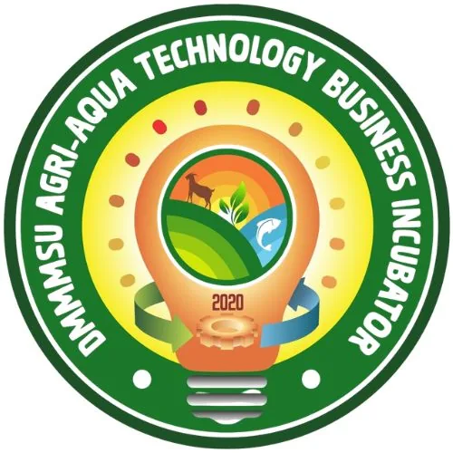

DOST-PCAARRD-DMMMSU Agri-Aqua Technology Business Incubator (ATBI)
Don Mariano Marcos Memorial State University · Region I
The DOST-PCAARRD-DMMMSU Agri, Aquaculture & Food TBI is hosted by Don Mariano Marcos Memorial State University (DMMMSU) in Rosario, La Union and serves as the Regional Agri-Aqua Technology Business Incubator for Region I (Ilocos). Established under the DOST-PCAARRD RAISE (Regional Agri-Aqua Innovation System Enhancement) Program, DMMMSU-ATBI functions as a regional hub for technology transfer, commercialization, and agri-aqua enterprise development across the Ilocos Region.
- Category
- Technology Business Incubator
- Host institution
- Don Mariano Marcos Memorial State University
- City
- Rosario, La Union
- Region
- Region I
- Operating status
- Operating
About the Center
As a Regional ATBI, DMMMSU-ATBI goes beyond direct incubation — it also provides capability building on technology transfer to R&D partners across Region I, facilitates convergence among regional AANR stakeholders, and enables public-private access to agriculture, aquaculture, and natural resources technologies. The center supports entrepreneurs in crops, livestock, aquaculture, post-harvest handling, food processing, and agricultural machinery.
The center is equipped with dedicated processing infrastructure including a meat processing area, fruits and vegetables processing area, seminar and food analysis room, conference rooms, and incubatee workstations. In 2023 DMMMSU-ATBI spearheaded the 1st Regional Agri-Aqua Technology Pitchfest and launched its Technology Portfolio; in 2026 it inked MOAs with 7 new incubatees and 2 institutional partners, continuing active regional expansion.
Programs & Services
- Agri-Aqua Technology Business Incubation — Full incubation cycle support for crops, livestock, aquaculture, food processing, and agri-machinery MSMEs, from technology adoption through commercial launch and scale-up
- Regional Capability Building on Technology Transfer — Workshops and training for R&D partner institutions across Region I, strengthening the regional agri-aqua innovation and commercialization ecosystem
- Food & Agricultural Processing Facilities — Access to a meat processing area, fruits and vegetables processing area, and a food analysis and seminar room with equipment for product development and testing
- Technology Pitching & Portfolio Events — Regional pitching competitions and technology portfolio showcases connecting incubatees with investors, markets, and government support programs
- RAISE Program Services — Regional Agri-Aqua Innovation System Enhancement support including IP management, technology business management, and co-incubation with partner institutions
- Business Management Training & Mentorship — Structured coaching on core business skills including financial management, marketing, quality assurance, and enterprise scaling
- Stakeholder Convergence & Public-Private Linkages — Facilitation of partnerships among regional agricultural, aquaculture, and natural resources stakeholders, government agencies, and the private sector
Contact
Sources & references
- dmmmsu.edu.ph/2022/04/06/dmmmsu-is-regional-atbi-under-dost-pcaarrd-raise-p…
- region1.dost.gov.ph/news/dost-pcaarrd-dmmmsu-atbi-elevates-la-union-entrepr…
- dmmmsu.edu.ph/2021/07/12/dmmmsu-breaks-ground-for-atbii-center
Details are drawn from public records and the sources above, July 2026.
Startupreneur Innovation Hub · synced from the Notion catalog (July 2026) · status: published.